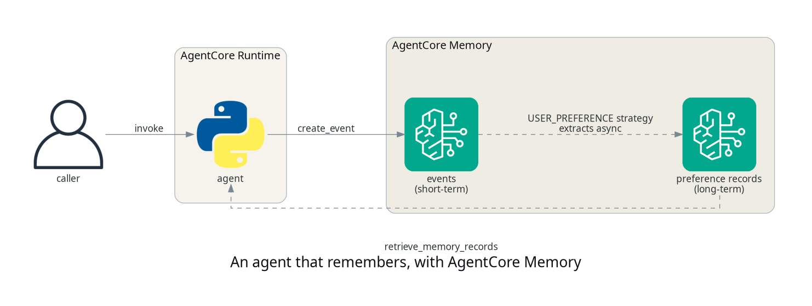
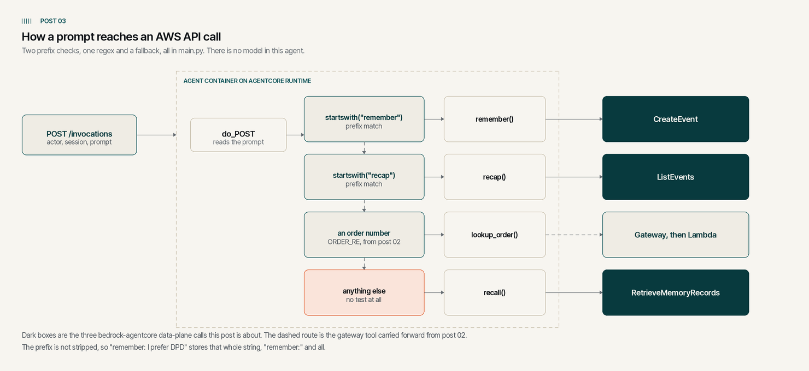

Giving your agent memory that survives the session
TL;DR;
How to add AgentCore Memory to an agent so it keeps short-term conversation events within a session and recalls extracted user preferences across sessions, with the extraction happening asynchronously on the service side.
SOURCE CODE - All code for this post is available at: https://github.com/levantar-ai/demos/tree/main/agentcore/03-memory
Longer version
The agent from the first post forgets everything the moment a session ends, which is what most agents do by default. Session state on its own does not fix this, because the useful things a user tells you (their name, their preferences, how they like to be contacted) belong to the user, not to the session they happened to say them in.
AgentCore Memory splits this into two layers. Events are raw conversation turns you write per actor and session, they expire after a configurable number of days and behave as short-term memory. Strategies watch those events and asynchronously extract structured records into namespaces, which is the long-term memory that survives across sessions. The service ships built-in strategies including semantic facts, summaries, user preferences and episodic memory, plus custom strategies where you control the extraction, and this post uses the user-preference one.

The walkthrough starts after terraform apply, because everything worth
watching in this demo happens on invocation. The apply itself is the same
shape as posts 01 and 02, seven resources, and the memory store is the slow
one at close to three minutes.
1 - The memory store
The memory side is two resources, the store itself with an expiry that defines how long raw events live, and a strategy that tells the service what to extract and where to put it:
resource "aws_bedrockagentcore_memory" "agent" {
name = "demos_agentcore_03_memory"
event_expiry_duration = 7
}
resource "aws_bedrockagentcore_memory_strategy" "preferences" {
memory_id = aws_bedrockagentcore_memory.agent.id
name = "UserPreferences"
type = "USER_PREFERENCE"
namespaces = ["/users/{actorId}"]
}
The namespace template is the interesting part. {actorId} is filled in
per actor at extraction time, so each user gets their own
/users/<actor> shelf of preference records, and the agent retrieves
from an actor-derived namespace.
NOTE: the actor id is not an authorization boundary, and AWS's security best practices put the mapping on your side of the shared responsibility model:
AgentCore does not enforce session-to-user mappings. Your client backend must maintain the relationship between users and their session IDs.
The same reasoning applies to actor ids. IAM scopes the runtime to this
one memory store, it says nothing about which actor a given request may
read or write, so actorId is request data like any other. This demo
takes actor straight from the payload so the mechanics stay visible, a
real application maps it from an identity the workload has actually
verified, never from an arbitrary client-supplied value.
NOTE: the memory store can take several minutes to create, so create it once per environment and keep it, rather than per deploy. Don't share one store across environments or security boundaries though, stale records from one test will happily turn up in the next.
2 - The agent
The agent from post 01 gains a cached boto3 client and three functions, which is also this agent's first dependency, because memory is a data-plane API rather than something the runtime injects:
def remember(actor, session, text):
client().create_event(
memoryId=os.environ["MEMORY_ID"],
actorId=actor,
sessionId=session,
eventTimestamp=datetime.now(timezone.utc),
payload=[{"conversational": {"content": {"text": text}, "role": "USER"}}],
)
def recap(actor, session):
resp = client().list_events(
memoryId=os.environ["MEMORY_ID"],
actorId=actor,
sessionId=session,
maxResults=20,
)
return [
p["conversational"]["content"]["text"]
for e in resp.get("events", [])
for p in e.get("payload", [])
if "conversational" in p
]
def recall(actor, query):
resp = client().retrieve_memory_records(
memoryId=os.environ["MEMORY_ID"],
namespace=f"/users/{actor}",
searchCriteria={"searchQuery": query},
maxResults=5,
)
return [r["content"]["text"] for r in resp.get("memoryRecordSummaries", [])]
Those three names are ours. What they wrap is CreateEvent, ListEvents
and RetrieveMemoryRecords, three data-plane calls on the
bedrock-agentcore client. Getting from a prompt to one of them is cruder
than the word agent suggests, because do_POST picks a branch with two
prefix checks, an order-number regex and a fallback, and the first match
wins.

Prompts starting with "remember" are stored as events, "recap" reads back
up to twenty of the current session's events, a prompt naming an order
number still goes to the gateway tool carried forward from post 02, and
anything else is searched against the extracted preference records. There is
no model deciding any of that, and nothing in AgentCore knows the words
"remember" or "recap". They are our keywords, matched with startswith, so
any prompt beginning with those characters routes the same way, "remembered"
included. The prefix is never stripped either, so the events read back
further down still carry it.
The runtime role gets exactly the three data-plane actions those functions use, scoped to this one memory store, least privilege for the whole memory layer in one statement:
{
Sid = "Memory"
Effect = "Allow"
Action = [
"bedrock-agentcore:CreateEvent",
"bedrock-agentcore:ListEvents",
"bedrock-agentcore:RetrieveMemoryRecords"
]
Resource = aws_bedrockagentcore_memory.agent.arn
}
Terraform passes the memory id in as an environment variable.
3 - Teaching it something
The invoke command is the same aws bedrock-agentcore invoke-agent-runtime
call as post 01, so the examples below show just the payloads and
responses. Session A, actor andy:
--payload '{"actor": "andy", "session": "session-a",
"prompt": "remember: my name is Andy and I always prefer DPD for deliveries"}'
{"result": "noted"}
--payload '{"actor": "andy", "session": "session-a",
"prompt": "remember: I like order updates by email, never SMS"}'
{"result": "noted"}
The events land immediately and are the short-term layer, which the agent reads back itself with "recap":
--payload '{"actor": "andy", "session": "session-a", "prompt": "recap"}'
{"result": ["remember: I like order updates by email, never SMS",
"remember: my name is Andy and I always prefer DPD for deliveries"]}
4 - Asking from a different session
The same question from a new session, asked immediately and then again once extraction had run. In this run the immediate answer was empty because the extracted record did not exist yet, extraction is asynchronous, so don't design against a fixed delay:
--payload '{"actor": "andy", "session": "session-b",
"prompt": "which delivery carrier do I prefer?"}'
{"result": []}
The same payload, asked again once the strategy had done its work:
--payload '{"actor": "andy", "session": "session-b",
"prompt": "which delivery carrier do I prefer?"}'
{"result": [
"{\"context\":\"The user explicitly stated they always prefer DPD for deliveries.\",
\"preference\":\"Always prefers DPD for deliveries\",
\"categories\":[\"shopping\",\"delivery\"]}"
]}
The service turned a raw "remember:" sentence into a structured record with the preference, the context it was stated in and categories, without any extraction code on our side. In this run the record appeared under a minute after the event it was extracted from.
NOTE: give a newly created strategy a few minutes before storing anything you care about. This is something we observed rather than documented behaviour, so treat it as a reason to check for the record rather than as a settling period you can rely on. In two separate deployments of this demo in
us-east-1, events stored in the first moments after the strategy was created, even withget-memoryalready reporting it ACTIVE, had still produced no records an hour later, while the same event stored once the strategy had settled was extracted in under a minute. The missed events stay readable in short-term, they had simply not become records by the time we stopped looking.
That answer came from a different session to the one the preferences were
stored in, which is the whole point. The extracted records are attached
to the actor, not the session, so any future session for andy can
retrieve them.
Conclusion
Memory in AgentCore is two deliberate layers rather than one magic box. Events give you immediate, per-session recall with an expiry date, and strategies turn those events into long-term records per user, ones that survive session end and event expiry, without you running any extraction pipeline yourself. The trade to design around is the asynchronous gap between storing and recalling, an agent that needs to use a fact in the same breath it learned it should read its own session events, and lean on the extracted records for everything that comes later.
The next post gives the agent the built-in tools, Code Interpreter and Browser, and looks at the security model of letting an agent execute code.
References: